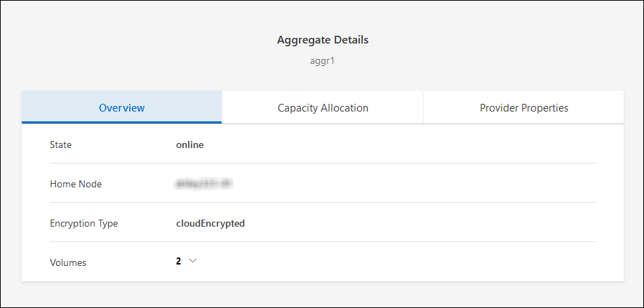
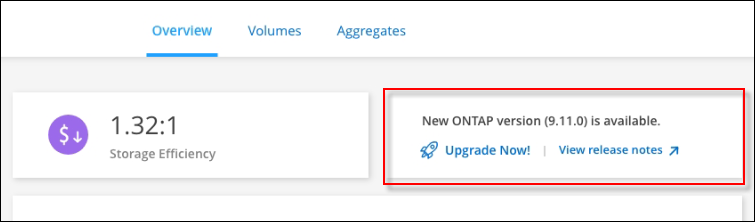

版本資訊
版本資訊
升級Cloud Volumes ONTAP 版軟體
 建議變更
建議變更
從Cloud Volumes ONTAP BlueXP升級以取得最新的新功能與增強功能。升級軟體之前、您應該先準備 Cloud Volumes ONTAP 好用的不一樣系統。
升級總覽
在開始Cloud Volumes ONTAP 進行還原升級程序之前、您應該注意下列事項。
僅從BlueXP升級
必須從BlueXP完成升級。Cloud Volumes ONTAP您不應 Cloud Volumes ONTAP 使用 System Manager 或 CLI 來升級功能。這樣做可能會影響系統穩定性。
如何升級
BlueXP提供兩種升級Cloud Volumes ONTAP 途徑：
-
在工作環境中顯示升級通知之後
-
將升級映像放在HTTPS位置、然後提供URL給BlueXP
支援的升級途徑
您可以升級的版本取決於您目前執行的版本。Cloud Volumes ONTAP Cloud Volumes ONTAP
| 目前版本 | 您可以直接升級至的版本 |
|---|---|
9.13.0 |
9.13.1.12.9.12.9. |
9.12.1 |
9.13.1.12.9.12.9. |
9.13.0 |
|
9.12.0% |
9.12.1 |
9.11.1. |
9.12.1 |
9.12.0% |
|
9.11.0 |
9.11.1. |
9.10.1 |
9.11.1. |
9.11.0 |
|
9.10.0% |
9.10.1 |
9.9.1 |
9.10.1 |
9.10.0% |
|
9.9.0 |
9.9.1 |
9.8 |
9.9.1 |
9.7% |
9.8 |
9.6% |
9.7% |
9.5. |
9.6% |
9.4. |
9.5. |
9.3. |
9.4. |
9.2. |
9.3. |
9.1. |
9.2. |
9.0 |
9.1. |
8.3 |
9.0 |
請注意下列事項：
-
支援的升級途徑Cloud Volumes ONTAP 與內部部署ONTAP 的內部部署的更新途徑不同。
-
如果您依照工作環境中顯示的升級通知進行升級、則BlueXP會提示您升級至遵循這些支援升級途徑的版本。
-
如果您將升級映像放在HTTPS位置進行升級、請務必遵循這些支援的升級途徑。
-
在某些情況下、您可能需要升級數次才能達到目標版本。
例如、如果您執行的是9.8版、而且想要升級至9.10.1版、則必須先升級至9.9.1版、然後再升級至9.10.1版。
-
對於修補程式（ P ）版本、您可以從一個版本版本升級至下一個版本的任何 P 版本。
以下是幾個範例：
-
9.13.0 > 9.13.1P15
-
9.12.1 > 9.13.1P2
-
還原或降級
不Cloud Volumes ONTAP 支援還原或降級至先前版本的功能。
支援註冊
必須向 NetApp 支援部門註冊、才能使用本頁所述的任何方法來升級軟體。 Cloud Volumes ONTAP這適用於 PAYGO 和 BYOL 。您需要 "手動登錄 PAYGO 系統"、但 BYOL 系統預設為註冊。

|
尚未註冊支援的系統仍會在新版本推出時收到在BlueXP中顯示的軟體更新通知。但您必須先註冊系統、才能升級軟體。 |
HA中介程序的升級
BlueXP也會在Cloud Volumes ONTAP 更新過程中視需要更新中介執行個體。
準備升級
執行升級之前、您必須先確認系統已就緒、並進行任何必要的組態變更。
計畫停機時間
當您升級單節點系統時、升級程序會使系統離線長達 25 分鐘、在此期間 I/O 會中斷。
在許多情況下、升級 HA 配對不會中斷營運、 I/O 也不會中斷。在此不中斷營運的升級程序中、會同時升級每個節點、以繼續為用戶端提供 I/O 服務。
工作階段導向的通訊協定可能會在升級期間對某些區域的用戶端和應用程式造成不良影響。如需詳細資訊、 "請參閱 ONTAP 文件"
確認自動恢復功能仍啟用
自動恢復必須在 Cloud Volumes ONTAP 一個「無法恢復的 HA 配對」上啟用（這是預設設定）。如果沒有、則作業將會失敗。
暫停SnapMirror傳輸
如果 Cloud Volumes ONTAP 某個不活躍的 SnapMirror 關係、最好在更新 Cloud Volumes ONTAP 該軟件之前暫停傳輸。暫停傳輸可防止 SnapMirror 故障。您必須暫停來自目的地系統的傳輸。

|
雖然 BlueXP 備份與還原使用 SnapMirror 實作來建立備份檔案（稱為 SnapMirror Cloud ）、但系統升級時不需要暫停備份。 |
這些步驟說明如何使用系統管理程式來執行 9.3 版及更新版本。
-
從目的地系統登入System Manager。
您可以將網頁瀏覽器指向叢集管理LIF的IP位址、以登入System Manager。您可以在Cloud Volumes ONTAP 不工作環境中找到IP位址。
您要從哪個電腦存取BlueXP、必須有連到Cloud Volumes ONTAP 該系統的網路連線。例如、您可能需要從雲端供應商網路中的跨接主機登入BlueXP。 -
按一下 * 保護 > 關係 * 。
-
選取關係、然後按一下 * 作業 > 靜止 * 。
驗證Aggregate是否在線上
更新軟體之前、必須先在線上安裝適用於 Cloud Volumes ONTAP 此功能的 Aggregate 。在大多數的組態中、 Aggregate 都應該處於線上狀態、但如果沒有、則應該將其上線。
這些步驟說明如何使用系統管理程式來執行 9.3 版及更新版本。
-
在工作環境中、按一下 * Aggregate * 標籤。
-
在 Aggregate 標題下、按一下「橢圓」按鈕、然後選取 * 檢視 Aggregate details* 。

-
如果 Aggregate 離線、請使用 System Manager 將 Aggregate 上線：
-
按一下「 * 儲存設備 > 集合體與磁碟 > Aggregate * 」。
-
選取 Aggregate 、然後按一下 * 更多動作 > 狀態 > 線上 * 。
-
升級Cloud Volumes ONTAP
當有新版本可供升級時、BlueXP會通知您。您可以從此通知開始升級程序。如需詳細資訊、請參閱 從BlueXP通知升級。
使用外部URL上的映像執行軟體升級的另一種方法。如果BlueXP無法存取S3儲存區來升級軟體、或是您已獲得修補程式、此選項很有幫助。如需詳細資訊、請參閱 從URL提供的映像升級。
從BlueXP通知升級
當Cloud Volumes ONTAP 有新版Cloud Volumes ONTAP 的功能時、BlueXP會在不工作環境中顯示通知：

您可以從此通知開始升級程序、從 S3 儲存區取得軟體映像、安裝映像、然後重新啟動系統、藉此自動化程序。
在Cloud Volumes ONTAP 這個系統上、不能進行諸如Volume或Aggregate建立等BlueXP作業。
-
從左側導覽功能表中、選取*儲存設備> Canvas*。
-
選取工作環境。
如果有新版本可用、則會在「概觀」索引標籤中顯示通知：
-
如果有新版本可用、請按一下 * 立即升級！ *
您必須先擁有 NetApp 支援網站 帳戶、才能透過 BlueXP 通知升級 Cloud Volumes ONTAP 。 -
在「升級 Cloud Volumes ONTAP 」頁面中、閱讀 EULA 、然後選取 * 我閱讀並核准 EULA * 。
-
按一下*升級*。
「升級 Cloud Volumes ONTAP 」頁面預設會選取最新可用的 Cloud Volumes ONTAP 版本進行升級。如果有舊版 Cloud Volumes ONTAP 、您可以按一下 * 選擇舊版 * 來選擇升級版本。
請參閱 "支援的升級路徑清單" 根據您目前的 Cloud Volumes ONTAP 版本、取得適當的升級路徑。
-
若要檢查升級狀態、請按一下「設定」圖示、然後選取 * 時間表 * 。
BlueXP會啟動軟體升級。軟體更新完成後、您可以在工作環境中執行動作。
如果您暫停 SnapMirror 傳輸、請使用 System Manager 繼續傳輸。
從URL提供的映像升級
您可以將Cloud Volumes ONTAP 「更新」軟體映像放在Connector或HTTP伺服器上、然後從BlueXP開始軟體升級。如果BlueXP無法存取S3儲存區來升級軟體、您可以使用此選項。
-
在Cloud Volumes ONTAP 這個系統上、不能進行諸如Volume或Aggregate建立等BlueXP作業。
-
如果您使用HTTPS來裝載ONTAP 資訊影像、升級可能會因為SSL驗證問題而失敗、因為遺失憑證。因應措施是產生並安裝CA簽署的憑證、以用於ONTAP 在EXP和BlueXP之間進行驗證。
前往NetApp知識庫檢視逐步指示：
-
選用：設定HTTP伺服器、以裝載Cloud Volumes ONTAP 支援此功能的軟體映像。
如果您有虛擬網路的VPN連線、您可以將Cloud Volumes ONTAP 該Imagesoftware映像放在您自己網路中的HTTP伺服器上。否則、您必須將檔案放在雲端的HTTP伺服器上。
-
如果您使用自己的安全群組Cloud Volumes ONTAP 來執行功能、請確定傳出規則允許HTTP連線Cloud Volumes ONTAP 、以便讓畫面能夠存取軟體映像。
預設情況下、預先定義Cloud Volumes ONTAP 的「支援HTTP連線」安全群組會允許傳出HTTP連線。 -
從取得軟體映像 "NetApp 支援網站"。
-
將軟體映像複製到Connector上的目錄、或是將從其中提供檔案的HTTP伺服器上。
有兩種路徑可供使用。正確的路徑取決於您的Connector版本。
-
/opt/application/netapp/cloudmanager/docker_occm/data/ontap/images/ -
/opt/application/netapp/cloudmanager/ontap/images/
-
-
在 BlueXP 的工作環境中、按一下 * 。 （橢圓圖示） * 、然後按一下 * 更新 Cloud Volumes ONTAP * 。
-
在「更新 Cloud Volumes ONTAP 版本」頁面上、輸入 URL 、然後按一下 * 變更映像 * 。
如果您將軟體映像複製到上述路徑中的Connector、請輸入下列URL：
\http ： //ONTAP <Connector-private-IP-address> / 影像 <image-file-name>
在 URL 中， * image-file-name* 必須遵循格式 "cot.image.9.13.1p2.tgz" 。 -
按 * Proceed* 確認。
BlueXP會啟動軟體更新。軟體更新完成後、即可在工作環境中執行動作。
如果您暫停 SnapMirror 傳輸、請使用 System Manager 繼續傳輸。
修正使用Google Cloud NAT閘道時的下載失敗
Connector會自動下載Cloud Volumes ONTAP 適用於更新的軟體。如果您的組態使用Google Cloud NAT閘道、下載可能會失敗。您可以限制軟體映像分成的零件數量來修正此問題。此步驟必須使用BlueXP API完成。
-
將PUT要求提交至/occm/config、並以下列Json做為本文：
{
"maxDownloadSessions": 32
}_MaxDownloadSseds_的值可以是1或任何大於1的整數。如果值為1、則下載的映像不會分割。
請注意、32為範例值。您應該使用的值取決於NAT組態和可同時使用的工作階段數目。